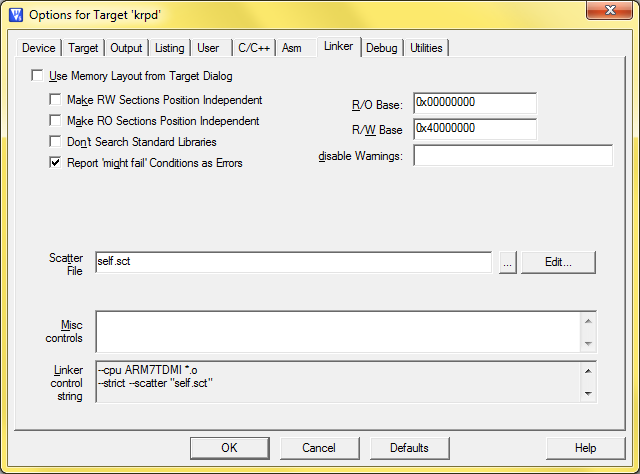

Self-rewriting executable code on LPC2388
I'm developing a device based on the LPC2388 chip manufactured by NXP (Philips). It's an ARM7TDMI-S working on the 60 MHz frequency. It has a good performance, 10/100 Ethernet, USB, UART, CAN, SPI/SSP, I2C/I2S and an external memory controller (EMC), allows connecting NOR, NAND flash and additional RAM. It runs the device installed on the locomotive and then rides with it around the country. I need to come up with a convenient and fast way to upgrade the deviceТs firmware.
The standard way to update the program is to take the unit out of the locomotive, disassemble the unit, close the jumper on it, connect to the computer via COM-port, upgrade it, then do the same in reversed order. Another way is to use JTAG, which also requires the removal of the device from the locomotive, disassembling and connecting it to a PC. In addition, a hardware debugger will be required.
We have to do without all that. The firmware should be able to overwrite itself. The firmware file will be delivered on an SD-card, inserted into the device. The device must then upgrade itself using that file. That's how many household devices are upgraded, including different kinds of MP3-players, routers etc.
LetТs see how this is done on LPC2388.
The device is able to read SD-cards (module from the micro-controller manufacturers).
Supported file systems include FAT and FAT32 (due to module ChaN's FatFS).
LPC2388 has 512KB of internal flash memory and 64 KB of RAM.
In the flash memory there is a program that gets control when the power is on.
To be more exact, it first gains control of the Boot Loader Boot ROM that then passes control to the user program if it's in the memory.
No operating system is used. The program is written in pure C.
LPC2388 has an IAP interface (In Application Programming), it allows the program to write to its own flash memory. This is not possible under usual circumstances, as there is the program and its constant data in the memory, the access is read-only. Usually you do not need to write anything anyway while he program is running, as there is random access memory for any changing data, or you can add some external memory and work with it. In addition, the recording space for the internal FLASH is limited: if you keep writing to it, there is a chance it may crash.
When we write to flash, we overwrite the program currently running from it. Once we have erased the sectors where the program is located, the processor has nowhere to take the following command it's going to execute from. The entire code written after this point will not be executed, the update will not be completed, plus the program has already been successfully erased and after restarting the device we will get a brick. This is a problem that we have to somehow figure out. When trying to solve this problem, there are pitfalls that weren't so obvious before. The IAP functions themselves are in ROM along with the Boot Loader, so they can't be killed (that's why the device can always be brought back to life with the help of a computer, cable COM and the Flash Magic utility).
== Solving the problem of code being erased on flash ==
The program must continue to run after sectors of flash memory are erased, because the program has yet to write the new firmware to it. Generally, the LPC2388 code can be executed directly in RAM. You just have to post the flash rewriting code into RAM. Then the code can be executed safely and do whatever you want with the flash memory. But we must make sure a rule is observed here: THE ENTIRE code executed while the flash memory is being overwritten must be placed into RAM. It's easy to miss a jump-back to the flash memory when calling an external function, and that's when the program will freeze, which will cause an overwrite failure and ultimately - a brick.
== Preliminary algorithm ==
- Find the file load.bin on the SD-card.
- Check the file using the CRC32 or something of the kind (not to write useless data or wrong file to it).
- Copy load.bin to flash to an area that's not occupied (it's safe).
- Go to the code branch implementing IAP and located in RAM.
- Copy the data from the flash area where you put load.bin to the area where the primary porgram is located. It's the first and the consecutive sectors if the program is large.
After rewriting and restarting the processor (turn power off and then on) the new program recorded in the flash memory will gain control, so you can consider the re-programming completed.
== IAP function calls ==
The IAP_Entry function is located in ROM at a fixed address. We will refer to it by the following announcement:
#define IAP_LOCATION 0x7FFFFFF1 #define iap_entry(a, b) ((void (*)())(IAP_LOCATION))(a, b) unsigned long command[5] = {0,0,0,0,0}; unsigned long result[3]= {0,0,0}; __align(4) unsigned char IAP_Buf[IAP_BUF_SIZE];
Then you can realize the functions that execute certain operations with the flash sectors. Essentially, all these features have long been realized. Source codes for IAP modules are available from the from microcontroller manufacturers. Here is the IAP_EraseSec function erasing a sector:
unsigned long IAP_EraseSec (unsigned long StartSecNum, unsigned long EndSecNum) { if (EndSecNum < StartSecNum) return IAP_STA_INVALD_PARAM; command[0] = IAP_CMD_EraseSec; command[1] = StartSecNum; command[2] = EndSecNum; command[3] = IAP_CLK / 1000; iap_entry(command, result); return result[0]; }
In command [3], we put the frequency on which the microcontroller is operating at the moment, in kHz. If my device operates at 60 MHz, the value of command [3] will be 60000.
== Placing code to RAM ==
The abovementioned function IAP_EraseSec and other ones of the same kind must be placed to RAM. It's easier to do it on the stage when the program is assembled. I use the MDK ARM 5.0 compiler and the Keil ?Vision 5 development environment. This environment supports the so-called scatter files, which are files setting up the layout of modules in memory. It looks something like that:
; *************************************************************
; *** Scatter-Loading Description File ***
; *************************************************************
LR_IROM1 0x00000000 0x00080000 { ; load region size_region
ER_IROM1 0x00000000 0x00080000 { ; load address = execution address
*.o (RESET, +First)
*(InRoot$$Sections)
.ANY (+RO)
}
RW_IRAM1 0x40000000 0x00010000 { ; RW data
iap.o
lpc2000_sector.o
aeabi_sdiv.o
.ANY (+RW +ZI)
}
}
To use your own Sct file, not the one generated by the Keil environment, you need to uncheck "Use Memory Layout from Target Dialog" in the project settings, on the Linker tab, then specify the required Sct file below. Let that file be in the same folder with the project. You can edit it within the environment, you have the Edit button next to the field for that purpose.

Region RW_IRAM means the region in the RAM memory that has access to read and write. iap.o, lpc2000_sector.o and aeabi_sdiv.o modules are located in it. The first module is an IAP realization, the second one contains the function that calculates a sector number in flash by the address (in LPC2388 memory, not all sectors are of the same length, that's why a sector number has to be calculated). The third module did not get there by accident, but we will talk about it later.
== Attempt # 1 ==
I placed the modules to RAM and reviewed all functions once again carefully,
to make sure they are not using any variables from flash and would not call any functions from there.
After checking everything, I ran it and got a deadlock after the first few sectors had been successfully recorded.
Running it in the debugger showed that the crash occurred in the getSectorIndex() function from the
lpc2000_sector module.
/* Return the sector index according to the specified address, if address is too large, return INVALID_RESULT */ unsigned long getSectorIndex(unsigned long addr) { SECTOR_DESC_T *psg = §or_desc[0]; unsigned long tmp, size_acc, sector_index, size_addr; size_acc = 0; size_addr = addr>>10; sector_index = INITIAL_SECTOR_INDEX; while (psg->sec_num) { tmp = size_addr - size_acc; //KB if (psg->sec_size*psg->sec_num > tmp) { sector_index += tmp/psg->sec_size; return sector_index; } else { sector_index += psg->sec_num; size_acc += psg->sec_size*psg->sec_num; } psg++; } return INVALID_RESULT; }
The code was dying on the sector_index += tmp/psg->sec_size; line. A harmless line with arithmetic operations. I looked at it in the debugger and saw that that line was calling the __ aeabi_uldivmod function. Judging by its name, this function performs division operations. Turns out, there is no hardware division implementation in LPC2388. That is why the division is realized in the library, while the function required is called implicitly. The map-file analysis showed that the __ aeabi_uldivmod function is located in the aeabi_sdiv.o module. I added it to the scatter file as well and it solved the problem.

Why not add and the FAT file system module to RAM module, to read from the card and record directly into the right sector? Because RAM is too small, only 64 kB, all modules may not fit there. You shouldn't clutter up RAM, as it's much easier to allocate an unused area in the internal flash-memory (somewhere closer to its end) and use it for temporary storage of firmware.
I also needed to use the memcpy function, but was not too excited about transferring the entire module to RAM. That's why I inserted a separate implementation of this particular function into the iap.c module, naming it xmemcpy and using it under that name.
Then, when you need to overwrite the sectors where the program is located, you will not have to call the SD or FAT function, it will be sufficient to read data in small portions from one sector of flash in RAM and write them to another sector.
== What to do with interrupts?==
Interrupt vectors are stored in the first sector, the same place where the program starts. They occupy space from 0x00000000 to 0x0000001C. When we overwrite the first sector, the interrupts must be disabled, so that the program counter would not jump out into open space once rewritten. However, you can use interrupts when writing to other sectors except the first one. They actually have to be used if we simultaneously read, say, from an SD and write to flash, as the SD module logic assumes that interrupts are available. When we have already gotten down to rewriting the real sectors where the program is located (including sector 0), interrupts must be disabled. At this stage, interrupts are no longer needed, plug-ins are not called, the information is simply read from one location of flash-memory and written to another.
The IAP function contains options to enable and disable interrupts in specific areas, but this is where another problem lies. For example, let's take a look at the IAP_Program function:
/* program content in IAP_Buf to internal flash with address of app_addr, and sector index of sector_index. if ok, return 0, otherwise return the error code. */ int IAP_Program(unsigned int sector_index, unsigned int app_addr) { unsigned int IAP_return[2]; // program 1kb [app_addr] // prepre sector [sector_index] to write if(IAP_PrepareSec(sector_index, sector_index) != IAP_STA_CMD_SUCCESS) { return 10; } disable_interrupts(); if ((IAP_CopyRAMToFlash(app_addr, (unsigned int)IAP_Buf, IAP_BUF_SIZE)) != IAP_STA_CMD_SUCCESS) { enable_interrupts(); return 12; } enable_interrupts(); if (IAP_Compare(app_addr, (unsigned long)IAP_Buf, IAP_BUF_SIZE, (unsigned long *)IAP_return) != IAP_STA_CMD_SUCCESS) { return 13; } return 0; }
LPC2388 has an interesting mechanism of disabling interrupts. The method usual for microcontrollers, which is "write the bit to the register to disable interrupts", does not work here. The correct register is available, but you can't just write the bit to it (it will have no effect). To write something to it, you need to use a special module written in assembly language (swi.s) and a mechanism of so-called software interrupts (software interrupts, swi).
The macros used above look like this:
/* XXX “ребует ассемблерный файл swi.s с обработчиком SWI. */ void __swi(0xFE) disable_interrupts(void); /* SWI.s */ void __swi(0xFF) enable_interrupts(void); /* SWI.s */
There is a SWI_Handler in the SWI.S file responsible for handling such calls. Depending on the parameter (0xFE or 0xFF), interrupts are enabled or disabled. The file itself is small, so I provide it here in full:
;/*****************************************************************************/ ;/* SWI.S: SWI Handler */ ;/*****************************************************************************/ ;/* This file is part of the uVision/ARM development tools. */ ;/* Copyright (c) 2005-2006 Keil Software. All rights reserved. */ ;/* This software may only be used under the terms of a valid, current, */ ;/* end user licence from KEIL for a compatible version of KEIL software */ ;/* development tools. Nothing else gives you the right to use this software. */ ;/*****************************************************************************/ T_Bit EQU 0x20 PRESERVE8 ; 8-Byte aligned Stack AREA SWI_Area, CODE, READONLY ARM EXPORT SWI_Handler SWI_Handler STMFD SP!, {R12, LR} ; Store R12, LR MRS R12, SPSR ; Get SPSR STMFD SP!, {R8, R12} ; Store R8, SPSR TST R12, #T_Bit ; Check Thumb Bit LDRNEH R12, [LR,#-2] ; Thumb: Load Halfword BICNE R12, R12, #0xFF00 ; Extract SWI Number LDREQ R12, [LR,#-4] ; ARM: Load Word BICEQ R12, R12, #0xFF000000 ; Extract SWI Number ; add code to enable/disable the global IRQ flag CMP R12,#0xFE ; disable IRQ implemented as __SWI 0xFE BEQ disable_IRQ CMP R12,#0xFF ; enable IRQ implemented as __SWI 0xFF BEQ enable_IRQ LDMFD SP!, {R8, R12} ; Load R8, SPSR MSR SPSR_cxsf, R12 ; Set SPSR LDMFD SP!, {R12, PC}^ ; Restore R12 and Return SWI_End disable_IRQ LDMFD SP!, {R8, R12} ; Load R8, SPSR ORR R12, R12, #0x80 ; Set IRQ flag to disable it MSR SPSR_cxsf, R12 ; Set SPSR LDMFD SP!, {R12, PC}^ ; Restore R12 and Return enable_IRQ LDMFD SP!, {R8, R12} ; Load R8, SPSR BIC R12, R12, #0x80 ; Set IRQ flag to disable it MSR SPSR_cxsf, R12 ; Set SPSR LDMFD SP!, {R12, PC}^ ; Restore R12 and Return END
And again, all these goodies are a code on flash. We already know that we can't access it when we are in RAM. We can disable all interrupts in advance, before going to RAM. Then we simply do not call swi-handlers, because we know that interrupts are disabled and do not have to be enabled. You can just isolate the calls through any global variable.
We write it like this: if (g_bAllowInterrupts) disable_interrupts();, while the global variable g_bAllowInterrupts is put in true (simple mode), or false (when we already disabled interrupts). That way we avoid the unwanted transition to the SWI.s module.
== Attempt #2 ==
This time, the code did not die and was executed to the very end.
The code ended in an infinite loop, at which point you need to turn off the device,
turn it on again and make sure it's is running controlled by the new firmware.
I did it, but after a reboot I saw no debug output on the terminal.
The firmware did not load.
I dumped the flash-memory and made sure that the firmware was identical to the .bin file that I recorded to the SD-card.
I also made sure the firmware was located in the required sectors.
What was the problem? Once again, I sat down to read User Manual and discovered this:
the firmware was correctly located in the memory,
but the bootloader would not load it because it did not meet certain requirements
the bootloader used to determine whether you can load from this specific area of the memory.
I began to look for information on what requirement those were.
In the first 32 bytes of the first sector (address from 0x00000000 to 0x0000001C) there are interrupt vectors each one 4 bytes. It looks in the following way in code:
Reset_Addr DCD Reset_Handler
Undef_Addr DCD Undef_Handler
SWI_Addr DCD SWI_Handler
PAbt_Addr DCD PAbt_Handler
DAbt_Addr DCD DAbt_Handler
DCD 0 ; Reserved Address
IRQ_Addr DCD IRQ_Handler
FIQ_Addr DCD FIQ_Handler
You can see there is a certain reserved value by the 0x00000014 displacement. Turns out, that was Valid User Program key, the checksum of interrupt vectors checked by the bootloader to decide whether the program can be loaded. In my program, there was a random value in that location, so it did not contain a checksum. Obviously, before uploading the image, it has to be prepared. You need a checksum that would give a 0 when all eight words are added.
I wrote the following function that simultaneously calculates a checksum for the interrupt vectors and checks whether this checksum is located in the specified area of the memory. If the function returns false, the checksum calculated is to be written to ptr [5] and everything will be fine. You do not do this inside the function, because the task is not to correct the checksum in the firmware. You only need to check the checksum. You need to write a program that would take the .bin file and insert a calculated checksum by the 0x00000014 displacement, as only in that case the file is suitable for updating the device.
// addr = адрес в RAM // checksum - сюда пишетс€ вычисленна€ контрольна€ сумма // возвращаемое значение - true, если контрольна€ сумма в addr совпадает с вычисленной bool ChecksumVectors(void * addr, OUT uint32_t * checksum) { uint32_t * ptr = (uint32_t *)addr; uint32_t uSum, uCheckSum; uSum = ptr[0]; uSum += ptr[1]; uSum += ptr[2]; uSum += ptr[3]; uSum += ptr[4]; uSum += ptr[6]; uSum += ptr[7]; uCheckSum = ~uSum; uCheckSum += 1; if (NULL != checksum) *checksum = uCheckSum; return (uCheckSum == ptr[5]); }
This feature made it possible to verify whether we've been given a correct image. I uploaded a correct image for the purpose of verification, the program updated it into the memory and the device was able to successfully start after a reboot. Success! Then I introduced extra protection checking the CRC32 checksum of the image (not just the title), but that's nothing to brag about.
The end algorithm turned out like this:
- Locate the load.bin file on the SD-card.
- Check the file for correctness using CRC32. If the checksum is not correct, stop the update.
- Check the checksum of interrupt vectors for correctness (first 32 bytes of the .bin file). If the checksum is not correct, stop the update.
- Copy load.bin to flash, to the area not occupied by anything.
- Disable interrupts.
- Go to the code branch that implements IAP and is located in RAM.
- Copy the data from the flash area where you put load.bin to the area where the primary program is located. It's the first and the consecutive sectors if the program is large.
- Go into infinite loop mode and wait for the power to turn off. Do not enable interrupts, do not call any functions.
There are other options. For example, in point 3 you don't have to stop the update, instead correcting the checksum right in the file and then copying that file with the correct checksum. It's impossible for point 2, but it is quite possible for the third one. In point 8, you can call a reboot in some way yourself, for example, through watchdog. To tell the truth, I decided not to do it to clearly demonstrate the moment the reprogramming was over. It happens so fast that one may not understand whether the program was updated on the device or nothing happened.
That seems to be it. I have achieved my goal - the device can update itself. At the same time I learned how to place code into the memory and use the internal flash-memory LPC, as well as discovered the absence of hardware division on the platform.
== Files ==
- User manual LPC23XX. UM10211.
- AN10835 LPC2000 secondary bootloader for code update using IAP.
- Chan's FatFs - FAT/FAT32 File system realization from Chan
- Code examples for peripherals LPC23xx/LPC24xx that can be used with the Keil ?Vision environment. The MCI module mentioned in the article was taken from here.
- Examples of how different bootloaders for LPC (SD, CAN, UART, XMODEM) can be implemented. Each one has a flaw - they can not overwrite themselves. The iap.c and lpc2000_sector.c modules mentioned in the article were taken from here.
- Flash Magic - is a program of updating chips via COM-port.
______________________________
amdf
http://hex.pp.ua/
xmpp:amdfxx@vir.pp.ua
2013
Inception E-Zine